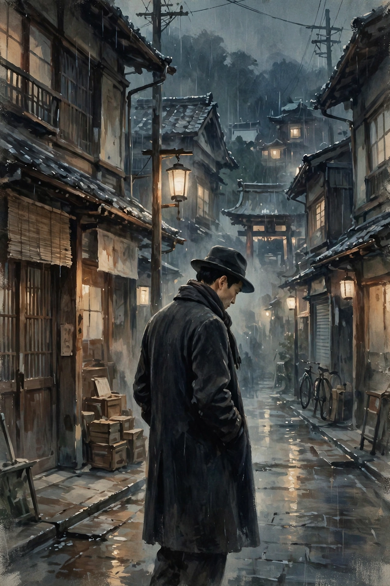

No Longer Human
No Longer Human (Japanese: 人間失格, Ningen Shikkaku, lit. "Disqualified as a Human Being") is a 1948 novel by Japanese author Osamu Dazai. It tells the story of Ōba Yōzō, a troubled man incapable of revealing his true self to others, who instead maintains a facade of hollow jocularity and later descends into alcoholism and drug addiction. It is considered Dazai's masterpiece and ranks as the second best-selling novel in Japan, after Kokoro by Natsume Sōseki.
| Author | Osamu Dazai |
|---|---|
| Original title | 人間失格 (Ningen Shikkaku) |
| Translator | Donald Keene (1958); Mark Gibeau (2018, as A Shameful Life) |
| Language | Japanese |
| Published | 1948 (Chikuma Shobō) |
| Genre | I-novel (autobiographical fiction) |

Plot
The novel is framed as the notebooks of Ōba Yōzō, discovered by an unnamed narrator along with three photographs of Ōba at different ages. Across three notebooks, Ōba recounts his alienation from childhood — masking his incomprehension of human beings with clowning — his student years in Tokyo, involvement with a Marxist group, a double suicide attempt in which his partner dies, and his degeneration through morphine addiction and alcoholism. The famous opening confession sets the tone: "I have always shuddered with horror at human beings."
Background and reception
The novel is semi-autobiographical; like Ōba, Dazai attempted suicide several times and struggled with addiction. It was published in 1948, shortly before Dazai drowned himself with his lover Tomie Yamazaki in the Tamagawa Canal. Donald Keene's 1958 English translation introduced Dazai to the West. The work has been adapted into manga (notably by Junji Ito, 2017–2018), anime and film.
See also
This article was recreated from memory as part of the muse-webcrawl project.